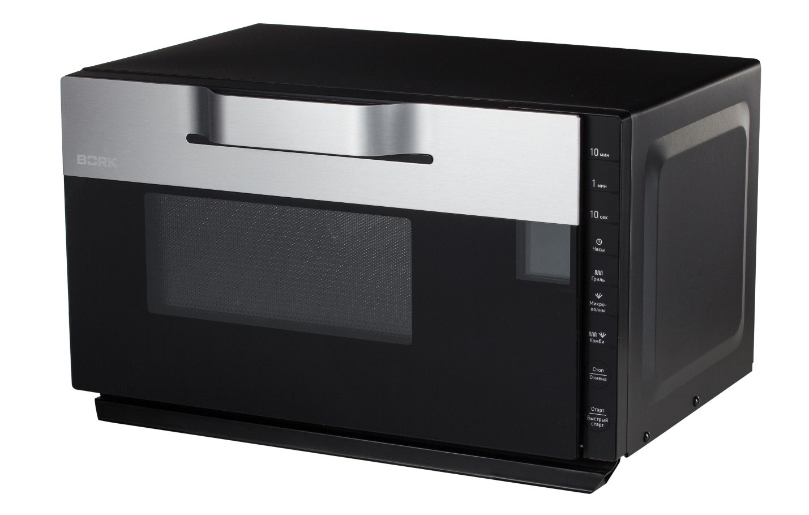
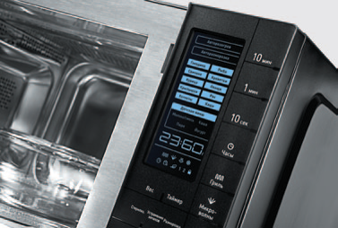
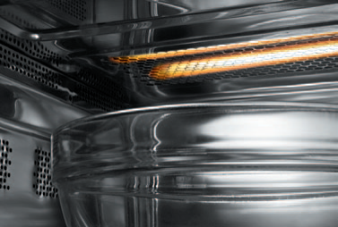
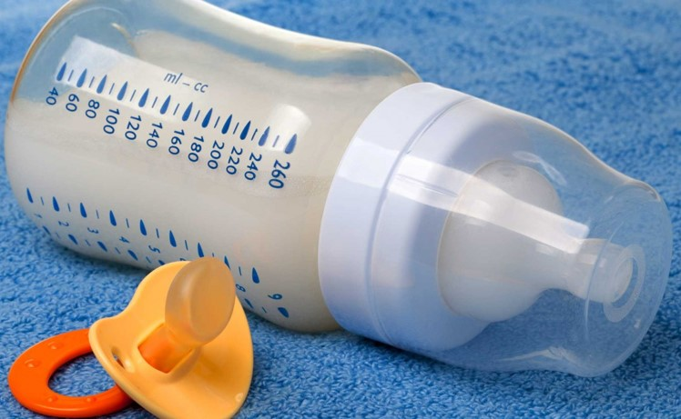
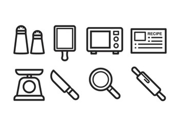
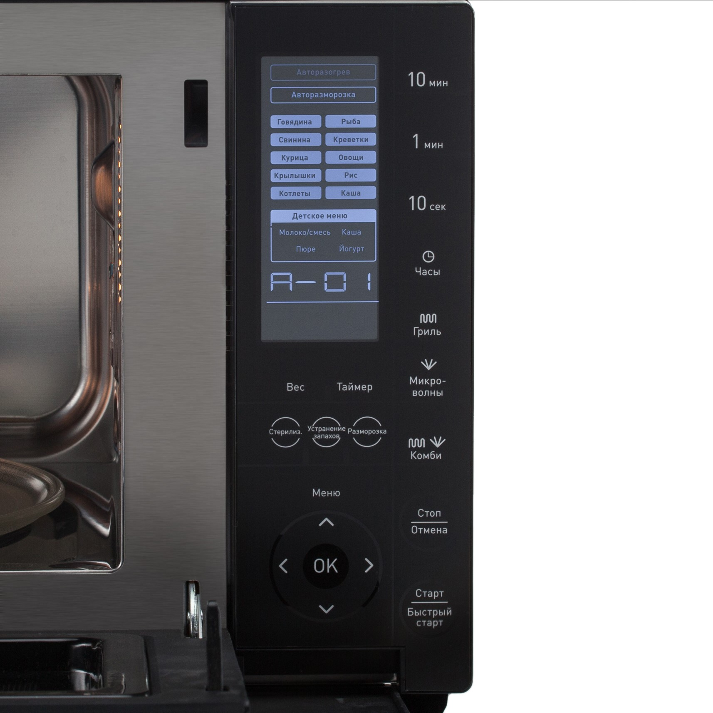

Микроволновая печь BORK W502
Аргументы для продажи
Сенсорное управление
Печь оснащена сенсорной панелью управления. На LCD-дисплее отображаются автоматические программы, выбранный режим, мощность,время готовности и все дополнительные функции.
Детское меню
Автоматические программы для детского питания позволяют готовить и разогревать молоко и смеси, йогурты, каши и пюре. Полноценный завтрак,обед или ужин для ребенка без лишних хлопот — одним нажатием кнопки.
Кварцевый гриль
Безопасный кварцевый гриль идеально подойдет для приготовления большинства мясных блюд, овощей, запеканок и горячих сэндвичей. При приготовлении в режиме Гриль продукты рекомендуется переворачивать. В середине процесса приготовления прозвучит сигнал, переверните продукт и нажмите кнопку Старт/Быстрый старт для продолжения процесса приготовления.
Функции стерилизации и устранения запахов
Печь снабжена функциями стерилизации и устранения запахов, которые позволяют ей быстро и безопасно обработать посуду для детского питания, емкости для консервирования и устранить запахи блюд в камере.
Часы
Настройка часов
Для настройки часов в режиме 24 или 12 нажмите кнопку Часы.
Установите необходимое время с помощью цифровой клавиатуры: 10 мин → 1 мин → 10 сек
Затем нажмите кнопку Часы для подтверждения настройки.
Функция ≪Замок от детей≫
Данная функция позволяет обеспечить безопасность детей, блокируя панель управления.
Нажмите и удерживайте кнопку Стоп/Отмена в течение 3 секунд.
Функционал
Экспресс-приготовление
Данный режим позволяет упростить задачу при приготовлении или разогревании несложных блюд. Максимальное время приготовления — 10 минут. Установите посуду на основание микроволновой печи. Для начала приготовления нажмите кнопку Старт/Быстрый старт. При каждом ее нажатии.Время увеличивается на 1 минуту.
Приготовление с помощью микроволн
Данная функция подходит для разогрева, варки и тушения большинства видов блюд.
Максимальное время приготовления — 99 минут 50 секунд.
- Для установки необходимого значения мощности нажмите кнопку Микроволны.
- С помощью цифровой клавиатуры установите необходимое значение времени.
- Для начала приготовления нажмите кнопку Старт/Быстрый старт.
- Чтобы изменить настройки в процессе приготовления, нажмите кнопку Стоп/Отмена.
Не используйте решетку для гриля в режиме микроволн.
Приготовление на гриле
Функция гриля оптимальна для приготовления большинства мясных блюд, горячих сэндвичей и запеканок. Решетка для гриля обеспечивает оптимальные условия приготовления продуктов. Максимальное время приготовления — 99 минут 50 секунд.
- Установите решетку для гриля.
- Нажмите кнопку Гриль.
- С помощью цифровой клавиатуры установите необходимое значение времени.
- Для начала приготовления нажмите кнопку Старт/Быстрый старт.
При приготовлении в режиме Гриль продукты рекомендуется переворачивать. В середине процесса приготовления прозвучит сигнал, переверните продукт и нажмите кнопку Старт/Быстрый старт для продолжения процесса приготовления.
Поэтапное приготовление
Данная функция позволяет запрограммировать микроволновую печь на приготовление блюд в несколько этапов. Функция поэтапного приготовления позволяет сочетать любые два режима.
Пример:
- Установите режим Микроволны.
- С помощью цифровой клавиатуры установите время приготовления.
- Установите режим Гриль.
- С помощью цифровой клавиатуры установите время приготовления.
- Для начала приготовления нажмите кнопку Старт/Быстрый старт.
Комбинированное приготовление
Комбинированные режимы позволяют совмещать разные виды тепловой обработки при приготовлении одного блюда.
Максимальное время — 99 минут 50 секунд.
- Нажмите кнопку Комби и выберите индикатор С1 или С2. C1 — подходит для приготовления рыбы и блюд, обжариваемых в сухарях.
- С помощью цифровой клавиатуры установите необходимое значение времени.
- Для начала приготовления нажмите кнопку Старт/Быстрый старт.
С1: микроволны 30% + гриль 70%
С2 — подходит для приготовления пудингов, омлетов, печеного картофеля и птицы.
С помощью цифровой клавиатуры установите необходимое значение времени.
- Для начала приготовления нажмите кнопку Старт/Быстрый старт.
С2: микроволны 55% + гриль 45%
Разморозка
В данном режиме вы можете быстро разморозить продукты, в зависимости от установленного времени.
Максимальное время приготовления — 99 минут 50 секунд.
- Нажмите кнопку Разморозка.
- С помощью цифровой клавиатуры установите необходимое значение времени.
- Затем нажмите кнопку Старт/Быстрый старт.
Функция отложенного старта
Данная функция позволяет приготовить блюдо к определенному времени.
Автоматическое приготовление
Данный режим позволяет приготовить любимое блюдо без установки времени и мощности. Достаточно указать тип продукта и вес.
Технические характеристики

Мощность:
1400 Вт (микроволны),
1000 Вт (гриль)
Выходная мощность микроволн: 900 Вт
Рабочая частота: 2450 МГц
Габариты (В×Ш×Г): 303×504×395 мм
Объем: 23 л.
Вес: 14 кг.
Сделано в Китае